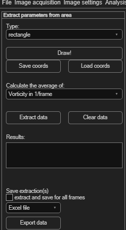
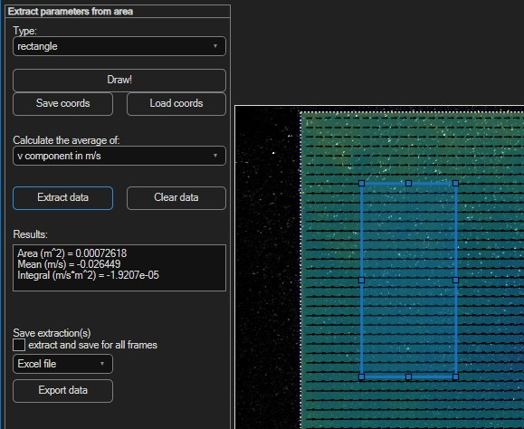

Parameters from area
Like parameters from poly-line, but instead of a profile along a line, this computes a single average value of a derived parameter over an enclosed area — useful for tracking a bulk quantity (e.g. mean vorticity in a region) over time.
Open via Extractions → Parameters from area (Ctrl+Q).

Drawing the area
Choose a Type — rectangle, polygon, circle, or circle series — then click Draw! and draw it on the image. Use Save coords / Load coords to reuse the same area later.
Extracting the average
- Pick the parameter from Calculate the average of — the same list as poly-line extraction, minus tangent velocity.
- Click Extract data. The numeric result appears directly in the Results box.
- Click Clear data to remove it.

Saving the extraction
Tick extract and save for all frames to get the average for every frame in the session (e.g. to track it over time), choose Excel file or Text file, then click Export data.